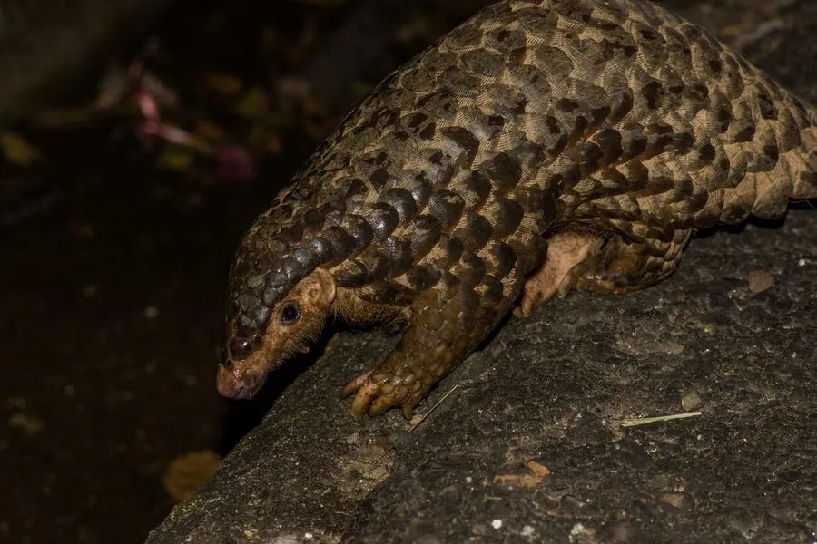

哺乳动物 · 动物界
中华穿山甲 Manis pentadactyla

全身覆盖角质鳞片的亚洲穿山甲，无齿而靠长舌舔食蚂蚁白蚁，因非法贸易被列为极危，中国国家一级保护动物。
- 分类
- 门脊索动物门纲哺乳纲目鳞甲目科穿山甲科属穿山甲属
- 栖息环境
- 中国南方及中南半岛的丘陵、山地森林、灌丛与农田边缘
- 地理分布
- 中国长江以南各省及台湾、海南，中南半岛北部也有分布
- 保护级别
- IUCN 极危（CR）；中国国家一级保护动物
物种志
中华穿山甲体长 0.4–0.58 米，尾长 0.25–0.38 米，体重 2–7 kg。它的头小、吻尖，全身覆盖相互叠压的角质鳞片，四肢粗短，前爪强壮弯曲，便于挖掘蚁穴；尾巴扁宽，尾下无鳞处可驮幼仔。
中华穿山甲栖息于中国南方及中南半岛的丘陵、山地森林和灌丛，多在夜间单独活动，靠敏锐嗅觉寻找蚂蚁和白蚁巢，用长舌伸入洞中舔食。它没有牙齿，食物靠胃中的角质突起和吞入的砂石磨碎；受惊时会把身体蜷成球，鳞片边缘锋利如刃。每年繁殖一次，妊娠期约 5–6 个月，每胎 1 仔，幼仔趴在母兽尾基部随行。由于鳞片和肉被误认为有药用与食用价值，穿山甲遭到大量盗猎走私，中华穿山甲已被列为极危，2020 年中国将其提升为国家一级保护动物。
形态与习性
- 食性蚂蚁和白蚁，靠长舌舔食
- 体长0.4–0.58 m，尾长 0.25–0.38 m
- 体重2–7 kg
- 寿命约 10–15 年
- 繁殖妊娠期约 5–6 个月，每胎 1 仔
- 特殊结构全身角质鳞片，无齿，长舌可伸入蚁穴
- 体温约 33–35℃，低于多数哺乳动物
趣味知识
- 穿山甲的鳞片由角蛋白构成，成分与人类的指甲相同。
- 它没有牙齿，用细长的舌头舔食蚂蚁和白蚁，靠胃中砂石磨碎食物。
- 受惊时穿山甲会蜷成球，锋利的鳞片边缘让天敌无从下口。
- 穿山甲行走时前爪背屈着地，避免磨损挖洞用的爪尖。